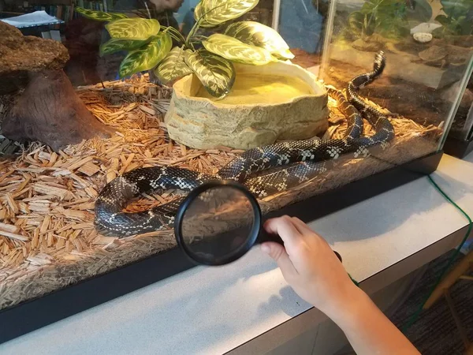
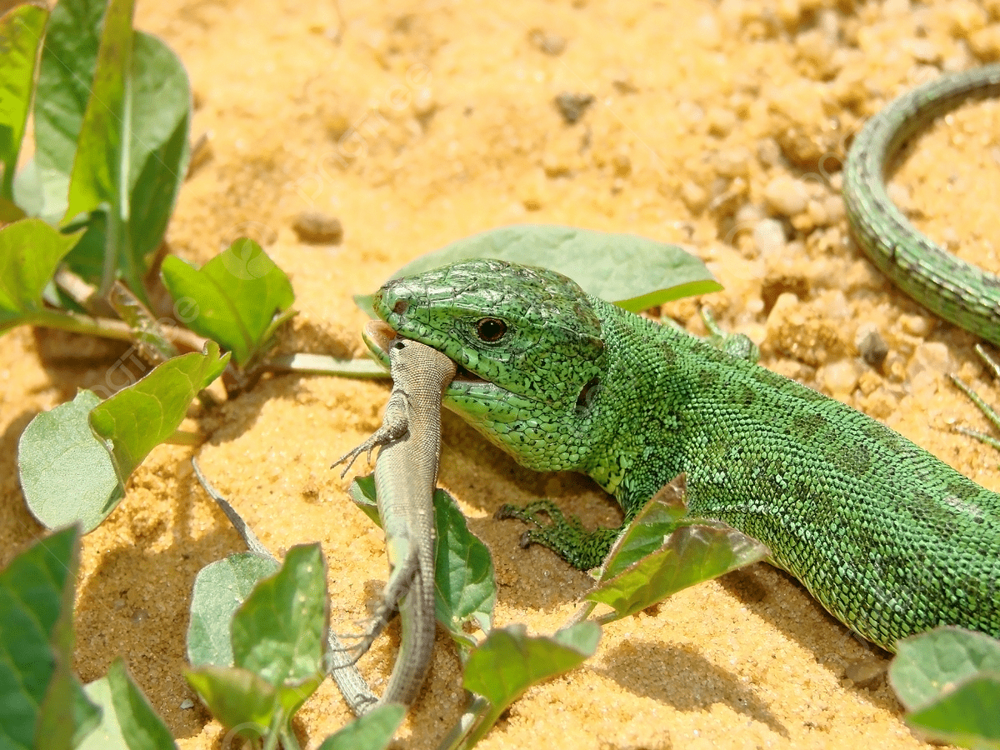
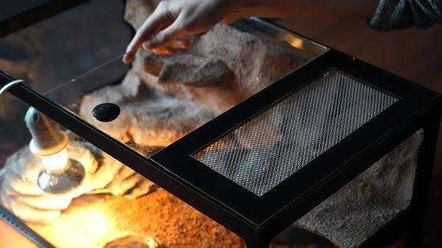

HABITATMenciptakan habitat yang baik
Kenali ukuran kandang, ventilasi, tempat bersembunyi, dan kondisi lingkungan yang sesuai spesies.
Baca panduan →TIPS & CARE
Panduan ringkas untuk membantu memahami kebutuhan habitat dan rutinitas perawatan reptil.

HABITATKenali ukuran kandang, ventilasi, tempat bersembunyi, dan kondisi lingkungan yang sesuai spesies.
Baca panduan →
FEEDINGKebutuhan pakan berbeda antarspesies. Pastikan jenis, ukuran, dan jadwal makan sesuai panduan tepercaya.
Baca panduan →
TEMPERATUREGunakan alat ukur yang tepat dan sediakan gradien suhu sesuai kebutuhan spesies reptilmu.
Pilih alat ukur →PANDUAN BERDASARKAN HEWAN
Setiap reptil punya kebutuhan berbeda. Buka panduan spesifik untuk mempelajari habitat, suhu, pakan, dan perlengkapan dasarnya.
Habitat, kelembapan, tempat bersembunyi, dan pakan sesuai jenis.
Buka panduan gecko ↗Kandang aman, gradien suhu, pakan, dan penanganan yang bertanggung jawab.
Buka panduan ular ↗Bedakan kebutuhan kura-kura darat dan akuatik, termasuk air dan area berjemur.
Buka panduan kura-kura ↗Ruang gerak, UVB, area berjemur, suhu, dan nutrisi sesuai usia.
Buka panduan bearded dragon ↗Tidak. Setiap spesies memiliki rentang suhu dan kelembapan berbeda. Riset kebutuhan spesies terlebih dahulu dan pantau kondisi habitat dengan alat ukur.
Kebutuhan UVB berbeda menurut spesies, jarak lampu, dan desain kandang. Ikuti panduan perawatan yang tepercaya serta petunjuk produsen.